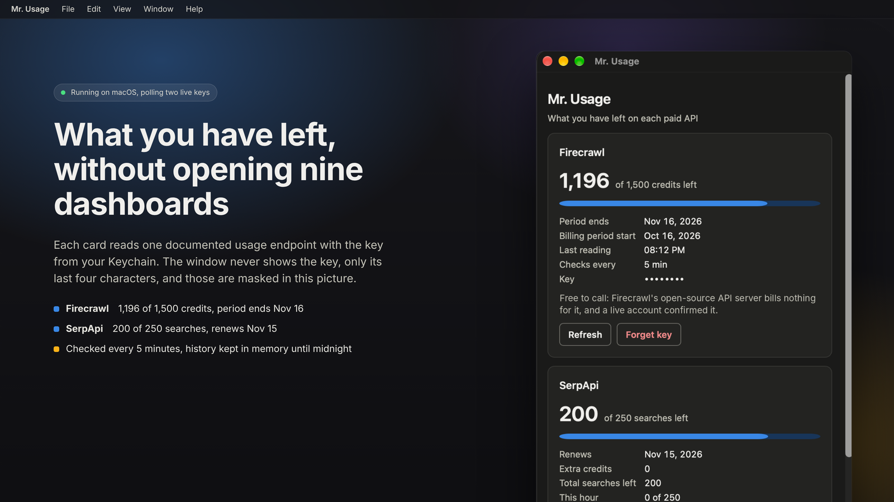

One window for what you have left at 44 paid APIs: search and scraping, research and data, LLM inference, speech and media, compute, quantum and SEO. How much is left, when each plan renews, what you have spent. Keys go into your operating system's credential store and never come back to the window.

Each card calls the usage page the vendor documents, with your own key, every 5 minutes by default. The exact address is shown before you save a key.
Keychain on macOS, Credential Manager on Windows, the Secret Service on Linux. The app reads a key at poll time, wraps it in a zeroizing type, and drops it.
Usage numbers and today's history live in memory. They are wiped at midnight, when you press Wipe history now, and when the app quits.
A yellow Low badge under 20% left and a red Nearly out badge under 5%, with the word next to the colour, so the state never depends on colour alone.
The only network traffic is the usage call to each vendor you added a key for, over TLS 1.2 or newer, to a fixed host list.
308 tests on three operating systems, a real keystore round trip with a core-dump leak scan, an end-to-end run through WebDriver, and installer smoke tests for every package.
Each provider has its own page with the exact endpoint the app reads and whether the vendor says the call is free.
Every card has the same layout. The big figure is the main number: what you have left, counting down from the plan limit when the vendor reports one. A few vendors report spend instead of a balance, and the main number is then what you have spent this period, against the cap if there is one. Press More on a card to open its details: the renewal date, spend this period, and any extra figures the vendor reports. The tables below give both for each provider.
| Provider | What the card shows |
|---|---|
| Firecrawl | Main number: credits left, out of the plan's credits. Details: the start and end of the billing period, and the overage when you have gone past zero. |
| SerpApi | Main number: searches left this month, out of the plan's monthly searches. Details: the renewal date, any extra credits, the total searches left including them, and this hour's searches against the hourly cap. An account with no monthly plan shows its total searches left instead. |
| Tavily | Main number: plan credits left, out of the plan's credits. Details: the plan name, how many credits this key alone has used, and pay-as-you-go usage against its limit when that is switched on. |
| Apify | Main number: dollars left of this month's spending limit. Details: compute units and proxy SERPs used this month, each against its own limit. |
| Brave Search | Main number: searches left this month, out of the plan's monthly quota. Details: when the month resets and the per-second rate limit. A pay-as-you-go plan has no monthly quota, and the card says so. |
| SearchApi.io | Main number: searches left this month, out of the monthly allowance. Details: when the subscription period ends, searches used this month, and searches this hour against the hourly limit. |
| ScrapingBee | Main number: API credits left, out of the plan's credits. Details: the renewal date, and how many requests are running right now against the concurrency limit. |
| Bright Data | Main number: available funds in dollars. Details: usage costs pending for the next invoice (shown as spend), plus any credit and any prepayment on the account. |
| Linkup | Main number: prepaid credit balance in dollars. Linkup reports no limit and no renewal date, so there are no details. |
| Crawlbase | Main number: on a subscription, Crawling API credits left this month; on pay as you go, this month's bill in dollars instead. Details: successful and failed requests this month, and on a subscription the amount due this month. |
| Provider | What the card shows |
|---|---|
| Elicit | Main number: the percentage of the plan still unused, out of 100. Details: when the period ends, whether Elicit still allows usage, and extra-usage spend in dollars against its cap. |
| Context7 | Main number: requests left this month, out of the plan's included requests. Details: the plan name, when usage resets, requests made this month, and on paid plans the extra requests and their cost against the spending limit. |
| Hunter | Main number: searches left, out of the plan's searches. Details: the plan name, verifications left, and on plans with one shared credit pool the pool itself (the search count is then an estimate drawn from that pool). |
| Provider | What the card shows |
|---|---|
| OpenRouter | Main number: dollars left on this key's credit limit. A key with no limit shows the workspace budget instead, and with no budget either the card shows this month's spend only. Details: when the limit resets, the budget and its reset interval, free-model requests today, and whether the account is on the free tier. |
| DeepSeek | Main number: total balance, in the currency DeepSeek bills you in (yuan or dollars). Details: how much of it was granted by DeepSeek and how much you topped up, and a warning when the balance is too low to run inference. |
| Moonshot (Kimi) | Main number: spendable balance in dollars, which is cash plus vouchers. Details: the voucher balance and the cash balance separately, and a warning when inference is blocked. A negative cash balance means you owe Moonshot money. |
| Vercel AI Gateway | Main number: the team's remaining AI Gateway credit in dollars. Details: everything spent since the account opened, labelled Used so far. Vercel does not report a monthly figure. |
| Novita AI | Main number: spendable balance in dollars. When the account has a credit line, the main number counts down from that line. Details: the topped-up balance and any amount owed. |
| SiliconFlow | Main number: total balance in dollars. Details: how much of it was granted by SiliconFlow and how much you topped up. |
| xAI | Main number: the team's prepaid credit balance in dollars. Details: any amount owed. Postpaid usage and spending limits are not shown. The card needs your team id as a setting. |
| Provider | What the card shows |
|---|---|
| Runway | Main number: the organization's credit balance. Runway has no plan limit to count down from. Details: the monthly spend cap when one is set. |
| fal.ai | Main number: remaining credit balance in dollars. Details: a warning when the balance is below zero. |
| ElevenLabs | Main number: characters left, out of the plan's character limit for this billing period. Details: when the count resets, the plan tier, the subscription status, and any usage-based overage spend. |
| Deepgram | Main number: the project's prepaid balance in US dollars, adding up every balance on the project that is in dollars. Details: how many balances were added, and how many were skipped because they are not in dollars. The card needs your project id as a setting. |
| D-ID | Main number: credits left, out of the total across all of the account's credit pools. The renewal date is when the first pool that still has credits expires. Details: how many pools the account has. |
| HeyGen | Depends on how the account is billed. Prepaid wallet: the balance in dollars or credits, with auto-reload on or off. Subscription: premium credits left and when they reset, with the plan name and add-on credits. Usage-based: dollars spent against the spending cap. |
| Stability AI | Main number: credit balance, rounded down to a whole number. Details: the exact balance with its fraction. |
| Black Forest Labs | Main number: credit balance, rounded down to a whole number. Details: the exact balance with its fraction, when it is not a whole number. |
| Luma | Main number: Dream Machine credit balance in US dollars. Luma reports it in cents and the card converts it. |
| Recraft | Main number: Recraft credits left. Recraft reports no limit or renewal date. |
| Provider | What the card shows |
|---|---|
| RunPod | Main number: prepaid balance in dollars. Details: the current spend per hour, the account spend limit when one is set, and the amount owed when the balance is negative. |
| Vast.ai | Main number: prepaid balance in dollars. A negative balance shows as zero left, with the amount owed in the details. |
| DigitalOcean | Main number: account credit in dollars, when the account has credit. Spend this period is this month's usage. Details: any amount owed, the month-to-date balance, and the time DigitalOcean produced these figures. |
| Provider | What the card shows |
|---|---|
| Azure Quantum | Main number: free job hours left in the workspace's largest hours quota, shown as hours and minutes, out of that quota. Details: which quota is being counted, hours on hold for queued jobs, when the month resets, and every other quota row (for example FPGA hours or concurrent jobs) as used against its limit. The card needs your workspace address as a setting. |
| IBM Quantum | No reading yet. The card explains that IBM Quantum needs a token exchange with a second host, which the app does not do. |
| Provider | What the card shows |
|---|---|
| Ahrefs | Main number: API units left, out of this key's monthly limit. A key with no limit of its own counts against the workspace pool instead. Details: the reset date, workspace usage, units used by this key, and the key's expiry date. |
| Moz | Main number: Data API rows left this month, out of the rows allotted. Details: when the period started and when it resets, and whether overage is enabled. |
| Semrush | Main number: Standard API units left. Semrush reports no limit and no renewal date, so there is no meter and no details. |
| SE Ranking | Main number: Data API units left, out of the subscription total. The renewal date is the subscription's expiry. Details: the subscription status and its start date. |
| Serpstat | Main number: API credits left, out of the plan's maximum. Serpstat counts one credit per result line, so a 100-row report costs 100 credits. Details: credits used this period, and extension credits left. Serpstat reports no renewal date. |
| Mangools | Mangools gives every tool its own allowance, called a pool: SERP lookups, related keywords, trends, backlink rows, and so on. Main number: SERP lookups left, out of that pool's limit, with the pool's reset time as the renewal date. Details: each other named pool as left out of limit, and a count of any pools the Mangools docs do not name. |
| DataForSEO | Main number: account balance in dollars. Details: how much you have deposited in total, how much you spent today, and the daily and per-minute spending limits. Paste your API login and password as one key in the form login:password. |
| Majestic | Main number: retrieval units left, the units spent whenever backlinks are returned. The renewal date is the earliest subscription expiry. Details: analysis units, index item units, detailed reports left, how many subscriptions the account has, and whether one is active. |
| Keywords Everywhere | Main number: prepaid credits left. Credits do not reset, so there is no limit and no renewal date. |
macOS or Linux, in a terminal:
curl -fsSL https://raw.githubusercontent.com/AlveeeRahman/mr-usage/main/installers/install.sh | shWindows, in PowerShell:
irm https://raw.githubusercontent.com/AlveeeRahman/mr-usage/main/installers/install.ps1 | iexThe command picks the right package for your machine, checks it against the release's checksum list, installs it and clears the "downloaded from the internet" flag, so the app opens without a detour through security settings. To install by hand instead, download from GitHub Releases; the README lists which file is which and what macOS and Windows will say about an unsigned app.
To uninstall, run the same command with --uninstall (macOS, Linux) or -Uninstall (Windows). It removes the keys from your credential store, then the app, then its settings.
macOS Keychain, Windows Credential Manager, or the Secret Service on Linux (GNOME Keyring, KWallet, KeePassXC), under the service name mr-usage. The app reads a key at the moment it calls the vendor, wraps it in a zeroizing type, and drops it. There is no server, no account, no analytics and no update check.
The full security design is in the threat model and every external fact is sourced in SOURCES.md.
Most vendors publish a usage endpoint that returns your remaining credits when called with your own key. Mr. Usage calls that endpoint for each provider you add, every 5 minutes by default, and shows the answer on a card. The endpoint for each vendor is listed on its page, linked above.
Add your OpenRouter key to Mr. Usage. It reads the key's own record and shows the dollars left on its credit limit, the workspace budget where the key has no limit, and this month's spend.
SerpApi, Context7 and Hunter document their usage calls as free. Firecrawl's open-source server shows its call bills nothing, and a live account confirmed it. Tavily lists only search, extract, map, crawl and research as billable. Elicit, OpenRouter, Apify and Runway do not say, and the card for each says so.
In your operating system's credential store under the service name mr-usage: Keychain on macOS, Credential Manager on Windows, the Secret Service on Linux. The app reads a key at the moment it calls the vendor and drops it afterwards. It never writes a key to a file of its own and never sends one back to the window.
Yes. It is open source under MIT or Apache-2.0, has no account and no paid tier, and talks to nothing but the usage endpoint of each vendor you gave it a key for.
macOS (Apple silicon and Intel), Windows, and Linux as a .deb, .rpm or AppImage. One install command per platform is on this page.